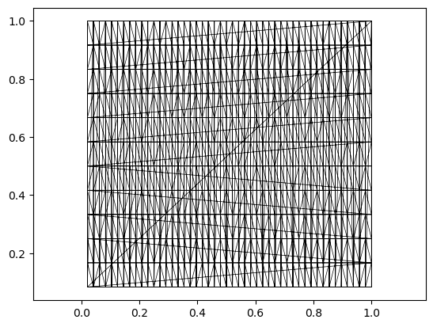

L = jnp.array([2.0, 3.0])
assert jnp.allclose(
displacement_periodic(
jnp.array([0.1, 0.2]),
jnp.array([1.9, 2.8]),
L,
),
jnp.array([-0.2, -0.4]),
)
assert jnp.allclose(
displacement_periodic(
jnp.array([1.9, 2.8]),
jnp.array([0.1, 0.2]),
L,
),
jnp.array([0.2, 0.4]),
)
assert jnp.allclose(
displacement_periodic_twisted(
jnp.array([0.0, 0.0]),
jnp.array([0.9, 1.1]),
jnp.array([1.0, 1.0]),
0.25,
),
jnp.array([0.15, 0.1]),
)
assert jnp.allclose(
displacement_periodic_twisted(
jnp.array([0.9, 0.9]),
jnp.array([0.1, -0.1]),
jnp.array([1.0, 1.0]),
0.25,
),
jnp.array([-0.05, 0.0]),
)Geometric quantities in periodic boundary conditions
In many 2D biophysical simulations (see tutorial 3 on “vertex models”), it is convenient to work with periodic boundary conditions, i.e. simulate cells in a box with lengths \(\mathbf{L} = [L_x, L_y]\) where opposite sides are identified. This module contains tools for mesh geometry in periodic boundary conditions.
In triangulax, mesh connectivity and geometry are decoupled, so periodic boundary conditions are easy to implement. One need two ingredients:
- A triangulation whose connectivity has the desired periodicity (e.g. a triangulation of a torus).
There are different ways to generate a triangulation of the torus - one example is included in test_meshes/torus_2d.obj. Note: edge flips/T1 on this mesh will preserve its topology, no further bookkeeping is needed. In particular, one does not need to keep track of any boundary vertices since there is no boundary. All triangulax tools related to the mesh connectivity (like the HeMesh class) can be used without modification.
- A distance function that takes into account the periodicity.
For a square domain with length \(L\) the displacement vector between two points \(\mathbf{r}_1, \mathbf{r}_2\) can be computed as \[\mathbf{d} = \mathbf{r}_1 - \mathbf{r}_2 - \mathrm{round}\left(\frac{|\mathbf{r}_1 - \mathbf{r}_2 |}{L} \right)L\]
This always gives the shortest displacement vector between the two points. With this distance function, one can compute edge lengths, angles, Voronoi duals, etc. Note: nothing prevents you from changing the shape of your domain, i.e. \(L\) dynamically during your simulation (for instance, to simulare growing tissues). You can even take gradients with respect to \(L\).
displacement_periodic_twisted
def displacement_periodic_twisted(
r_1:Float[Array, '2'], r_2:Float[Array, '2'], L:Float[Array, '2'], # Box lengths [L_x, L_y].
s:float, # Shear factor relating vertical wraps to an x-shift of s * L_x.
)->Float[Array, '2']:
Return the minimum-image displacement on a sheared periodic torus.
displacement_periodic
def displacement_periodic(
r_1:Float[Array, '2'], r_2:Float[Array, '2'], L:Float[Array, '2'], # Box lengths [L_x, L_y].
)->Float[Array, '2']:
Return the minimum-image displacement on a rectangular torus.
Edge lengths, angles, and areas
Geometric quantities like angles and triangle areas can be computed using the displacement functions defined above. To do this, we can use the “intrinsic” geometry functions from the trigonometry module to compute everything in terms of edge lengths.
# this is an example of a 2d mesh with "periodic boundary conditions" - topologically, it is just a torus.
# Thus, the faces that wrap around the boundary.
trimesh = TriMesh.read_obj("../test_meshes/torus_2d.obj", dim=2)
hemesh = HeMesh.from_triangles(trimesh.vertices.shape[0], trimesh.faces)
vertices = trimesh.vertices
plt.triplot(vertices[:,0], vertices[:,1], trimesh.faces, lw=0.5, color="k")
plt.axis("equal")(np.float64(-0.028125350000000004),
np.float64(1.04895835),
np.float64(0.03749965),
np.float64(1.04583335))
hemesh.bdry_loops # the mesh has no boundary[]# to compute angles, we use the intrinsic geometry of the mesh
L = jnp.array([1.0, 1.0]) # box lengths
def my_distance_function(r_1, r_2): return displacement_periodic(r_1, r_2, L)
edge_lengths = jax.vmap(my_distance_function)(vertices[hemesh.orig], vertices[hemesh.dest])
edge_lengths_nonperiodic = jnp.linalg.norm(vertices[hemesh.orig] - vertices[hemesh.dest], axis=1)
edge_lengths.max(), edge_lengths_nonperiodic.max()(Array(0.083334, dtype=float64), Array(1.34128535, dtype=float64))# let's group together the edge lengths for each face, then compute the area
la, lb, lc = (edge_lengths[hemesh.prv[hemesh.face_incident]],
edge_lengths[hemesh.face_incident],
edge_lengths[hemesh.nxt[hemesh.face_incident]],)
angles = jax.vmap(trig.get_angles_from_lengths)(la, lb, lc)
areas = jax.vmap(trig.get_triangle_area_from_lengths)(la, lb, lc)get_periodic_corner_cotangents
def get_periodic_corner_cotangents(
vertices:Float[Array, 'n_vertices 2'], hemesh:HeMesh, distance_function:Callable
)->Float[Array, 'n_faces 3']:
Compute all face corner cotangents using a periodic displacement function.
get_periodic_corner_angles
def get_periodic_corner_angles(
vertices:Float[Array, 'n_vertices 2'], hemesh:HeMesh, distance_function:Callable
)->Float[Array, 'n_faces 3']:
Compute all face corner angles using a periodic distance function.
get_periodic_triangle_areas
def get_periodic_triangle_areas(
vertices:Float[Array, 'n_vertices 2'], hemesh:HeMesh, distance_function:Callable
)->Float[Array, 'n_faces']:
Compute triangle areas using a periodic distance function.
periodic_distance = lambda r_1, r_2: displacement_periodic(r_1, r_2, L)
periodic_areas = get_periodic_triangle_areas(vertices, hemesh, periodic_distance)
periodic_angles = get_periodic_corner_angles(vertices, hemesh, periodic_distance)
periodic_cotangents = get_periodic_corner_cotangents(vertices, hemesh, periodic_distance)
manual_edge_lengths = jnp.linalg.norm(
jax.vmap(periodic_distance)(vertices[hemesh.orig], vertices[hemesh.dest]),
axis=-1,
)
la_test, lb_test, lc_test = (manual_edge_lengths[hemesh.prv[hemesh.face_incident]],
manual_edge_lengths[hemesh.face_incident],
manual_edge_lengths[hemesh.nxt[hemesh.face_incident]],)
assert periodic_areas.shape == (hemesh.n_faces,)
assert periodic_angles.shape == (hemesh.n_faces, 3)
assert periodic_cotangents.shape == (hemesh.n_faces, 3)
assert jnp.allclose(
periodic_areas,
jax.vmap(trig.get_triangle_area_from_lengths)(la_test, lb_test, lc_test),
)
assert jnp.allclose(
periodic_angles,
jax.vmap(trig.get_angles_from_lengths)(la_test, lb_test, lc_test),
)
assert jnp.allclose(
periodic_cotangents,
jax.vmap(trig.get_cotangents_from_lengths)(la_test, lb_test, lc_test),
)
zero_twist_distance = lambda r_1, r_2: displacement_periodic_twisted(r_1, r_2, L, 0.0)
assert jnp.allclose(
periodic_areas,
get_periodic_triangle_areas(vertices, hemesh, zero_twist_distance),
)
assert jnp.allclose(
periodic_angles,
get_periodic_corner_angles(vertices, hemesh, zero_twist_distance),
)
assert jnp.allclose(
periodic_cotangents,
get_periodic_corner_cotangents(vertices, hemesh, zero_twist_distance),
)
print("periodic geometry tests passed")periodic geometry tests passedVoronoi dual
We can also compute the Voronoi dual for a periodic boundary conditions. To do so, we modify the “circumcenter” function to use our custom distance function.
1